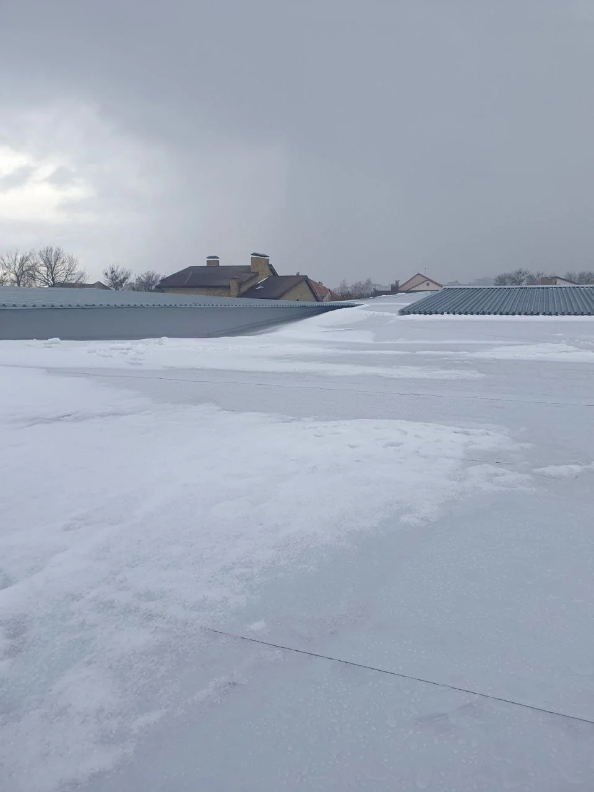

← Усі роботи
Реальний кейс
Мембранна покрівля комерційного об’єкта взимку
Реальний кейс METROPLEX: мембранна покрівля комерційного об’єкта взимку. Показано тип об’єкта, покрівельну систему, етапи та ключові вузли.

Тип об’єктаКомерційний об’єкт
МатеріалПВХ-мембрана
ЛокаціяХарківська область
Досвід компаніїз 2017 року
METROPLEX
Що виконано на об’єкті
Описуємо лише роботи, які видно та підтверджено матеріалами цього об’єкта.
- контроль стану поверхні
- перевірка примикань
- огляд парапетів
- фіксація стану покриття
Як читати цей кейс
Кейс показує реальний об’єкт і підтверджені етапи робіт. Технічне рішення для іншої будівлі може відрізнятися після перевірки основи, геометрії та вузлів.
- вихідна задача об’єкта
- застосована покрівельна система
- виконані етапи
- ключові примикання та периметр
Підтверджений досвід
METROPLEX працює з 2017 року
Досвід підтверджуємо реальними фото, робочими вузлами та послідовністю виконання робіт. Без вигаданих цифр і шаблонних обіцянок.